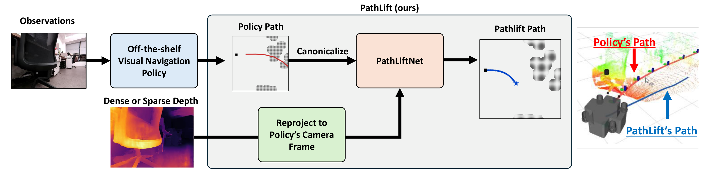

PathLift: Depth-Conditioned Metric Lifting for Visual-Navigation Priors
Gwanjun Shin, Hyeongseok Suh, Hongmo Jung, and Jongwoo Lim
CoRL 2026
Ph.D. student, Department of Mechanical Engineering, Seoul National University
Robot Vision Lab
I am interested in 3D vision, SLAM, and robotics.
Bachelor's degree | 2018–2024
Master's degree | 2024–2026
Ph.D. | 2026–present

Gwanjun Shin, Hyeongseok Suh, Hongmo Jung, and Jongwoo Lim
CoRL 2026